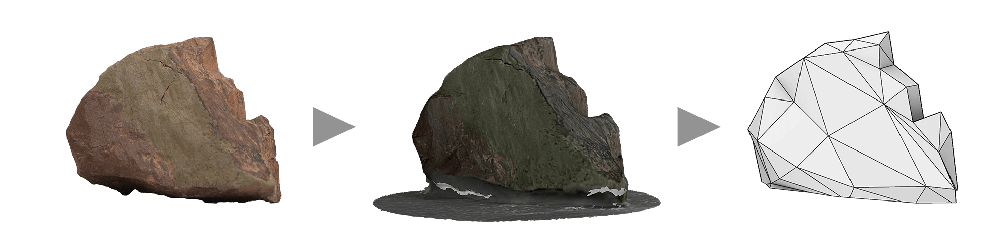
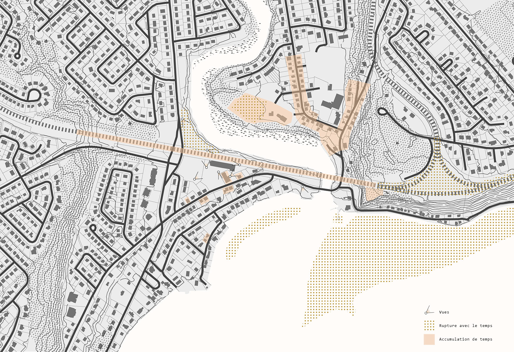
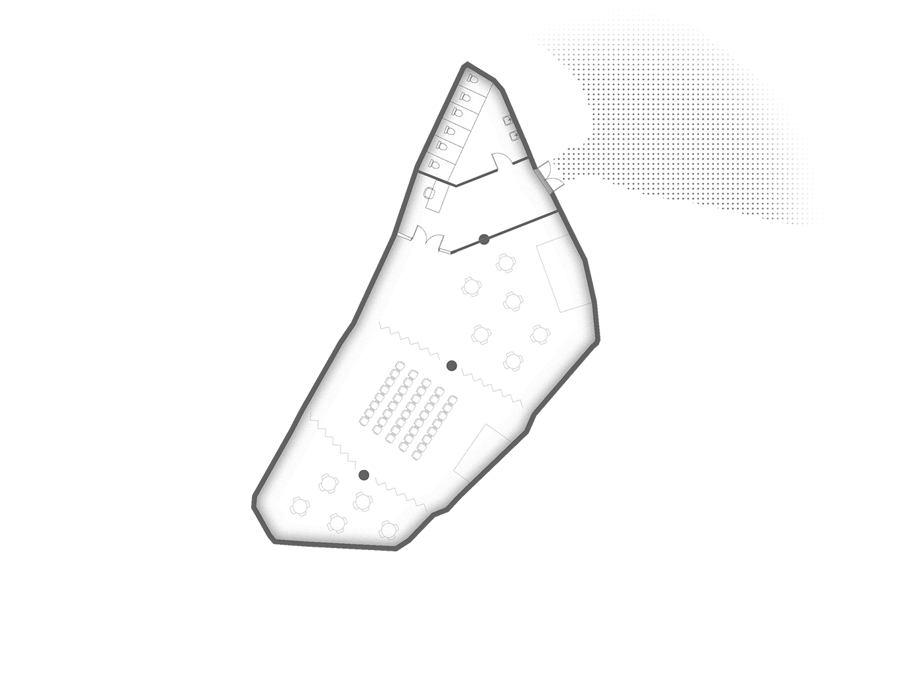
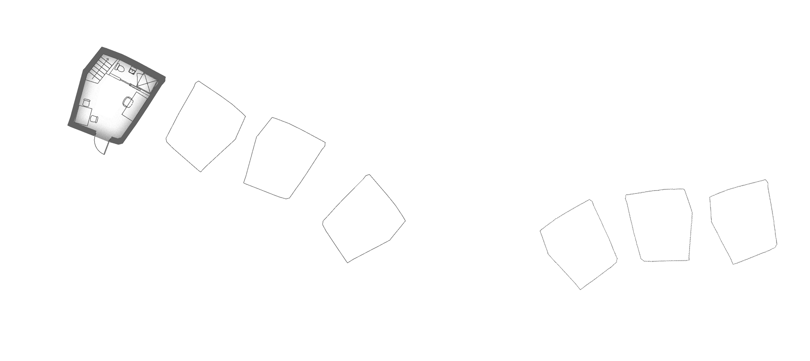
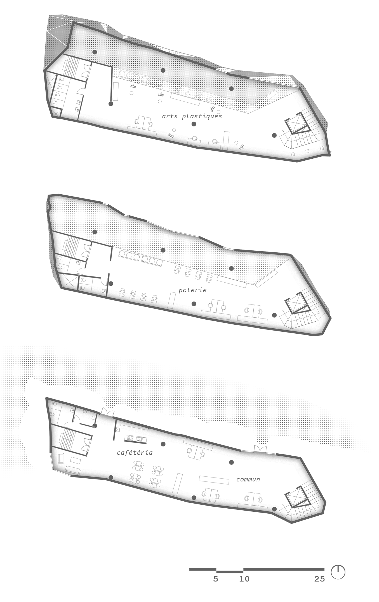
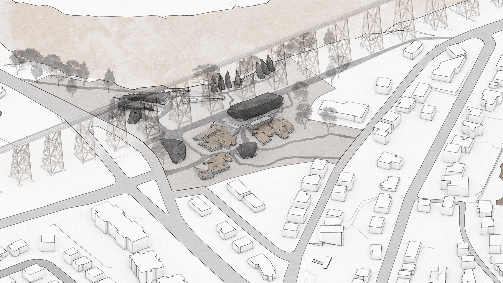
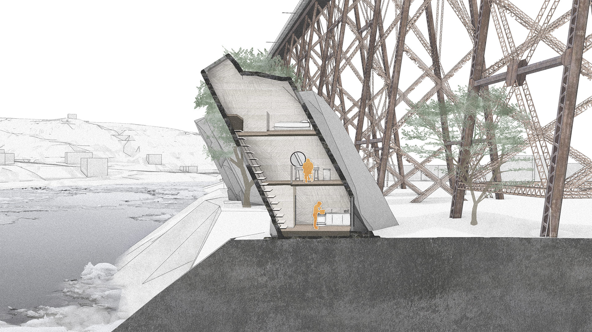
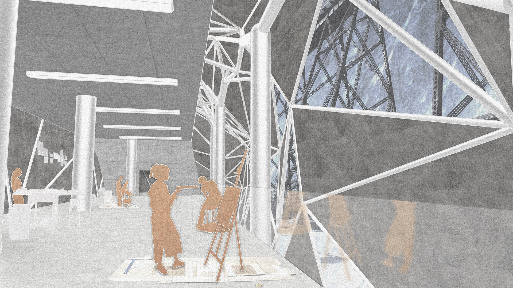
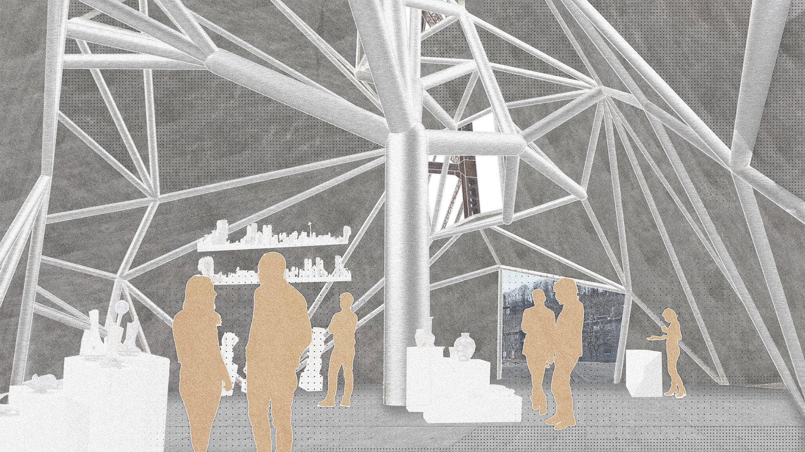

Ambiance extérieure: ateliers et centre d'escalade
Le Cap Rouge, à l’origine du nom du quartier éponyme de la ville de Québec, est lui-même nommé d’après la couleur des schistes qui le composent. En se promenant aux abords du fleuve, on se voit entouré de cette roche métamorphique, dans un paysage lithique et inconnu. Au cours de l’année précédente, les résidents en télétravail ont pu redécouvrir la beauté de ce paysage et se réapproprier les rues de leur quartier.
Afin d’assurer la pérennité d’un tel nouveau mode de vie à l’échelle du quartier, ROC propose un centre communautaire artistique mettant de l’avant le rapport de l’humain à la terre et la matière. Le projet contient plusieurs pavillons et espaces extérieurs qui mettront en valeur les œuvres d’artistes locaux produites dans l’atelier de poterie et d’arts plastiques qui surplombe le site.
La matière du sol est à la fois la source des formes du centre artistique, ainsi que le point focal des fonctions qu’il abrite. En ce sens, la forme de l’enveloppe du bâtiment provient directement de spécimens de schiste recueillis sur le cap, et la matérialité de l’enveloppe de ses pavillons reflète le caractère des roches du lieu.
Déclencheur créatif: schistes du Cap-Rouge
Mapping: relations de temps à Cap-Rouge
Secteur d'exposition
Salle polyvalente
Résidences d'artistes
Ateliers
Détail de structure-type
Plan d'implantation
Axonométrie d'implantation
Coupe d'une résidence type
Ambiance intérieure: ateliers
Ambiance intérieure: galerie d'art